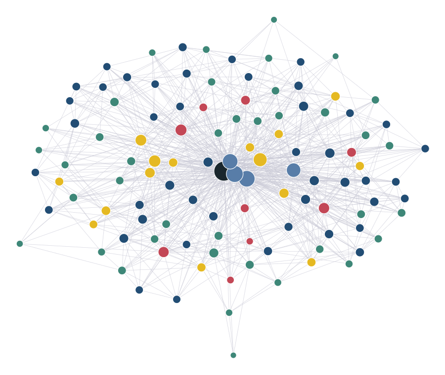

Complaint Workbench · Method and research
Research first: 113 linked notes behind every design decision.

Research, 9 notesConcepts, 45Decisions, 39Features, 15
Read the rules and the evidence. FCA complaint deadlines, AI threats and controls, verification and automation bias, UX evidence, how bank complaint teams work today.
Check every fact at its source. Anything not opened is marked unverified and kept off the screens.
One note per decision: who made it, the evidence, the trade-off and what would change it. An Obsidian vault in the repo.
Spec, then a 13-task plan, then build test-first, each task checked by a separate reviewer.
Scope kept small: one bank, one journey, synthetic data only.
Prototype for the Ankura AI by Design task, not an Ankura product. All data synthetic.1 / 5